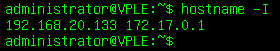

VPLE
Preparar el entorno
https://www.vulnhub.com/entry/vulnerable-pentesting-lab-environment-1,737/
Es una máquina que implemente muchas aplicaciones web vulnerables:
Web-dvwa (eg.123.123.123.123:1335/)
Mutillidae (eg.123.123.123.123:1336/)
Webgoat (eg.123.123.123.123:1337/WebGoat/)
Bwapp (eg.123.123.123.123:8080/install.php & 123.123.123.123:8080/install.php )
Juice-shop (eg.123.123.123.123:3000/)
Security-ninjas (eg.123.123.123.123:8899/)
Wordpress (eg.123.123.123.123:8800/)
Una vez la importemos la conectamos a la red privada de VMWare.

A partir de aquí podemos ir navegando las diferente paginas vulnerables que ofrece desde el navegador.